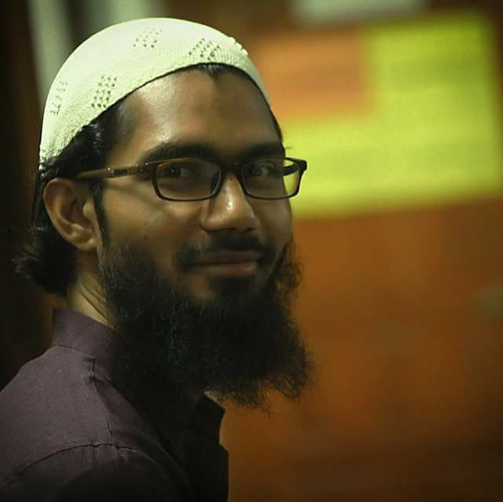

Beyond the Resume
Robotics · Education · Entrepreneurship · Research
🌟 Where curiosity meets purpose
This page is for everyone who wants to know what drives me — colleagues, collaborators, friends, and family. Behind the professional milestones is a deep passion for robotics, a love for teaching, and a dream of building something meaningful.

What Drives Me
Four pillars that shape how I think, create, and contribute to the world.
Deep Dive
My journey in robotics began at RUET, where I served as Technical Secretary of the Robotics Society and trained peers in microcontroller programming. My final year thesis — a Head Gesture-Controlled Wheelchair — was published on the IEEE platform, reflecting my commitment to solving real human problems through embedded systems.
From 2014 to 2019, as an R&D Engineer at 3Engineers, I designed and built microcontroller-based products, supervised engineering teams, and ran hands-on training workshops for students and professionals. Later, at Varendra University, I founded and ran the university Robotics Lab, organizing crash courses and competitive robotics events.
Today, my work has expanded into business and IT — but the hardware instinct never left. I plan to deepen my studies in robotics and embedded systems design, and eventually bring that knowledge back into education.
Research
Vision
I spent three years as a Lecturer in Computer Science and Engineering at Varendra University, teaching Microprocessors, Embedded Systems, Electronics, and Digital Signal Processing. But the most meaningful part was building the university's Robotics Lab from scratch and watching students discover what technology can do.
I organized robotics workshops, crash courses, and inter-university competitions. I've trained students in electronics and embedded systems at every level — from beginners in school to advanced university engineers.
My future goal is to teach robotics and embedded systems at schools, colleges, and universities, making practical technology education available to the next generation — regardless of where they are.
Introduce robotics and basic electronics to curious young minds through workshops and hands-on kits.
Bridge the gap between theory and practical embedded systems skills for technical students.
Return to academia after deeper personal research — contributing to the next generation of engineers.
Entrepreneurship